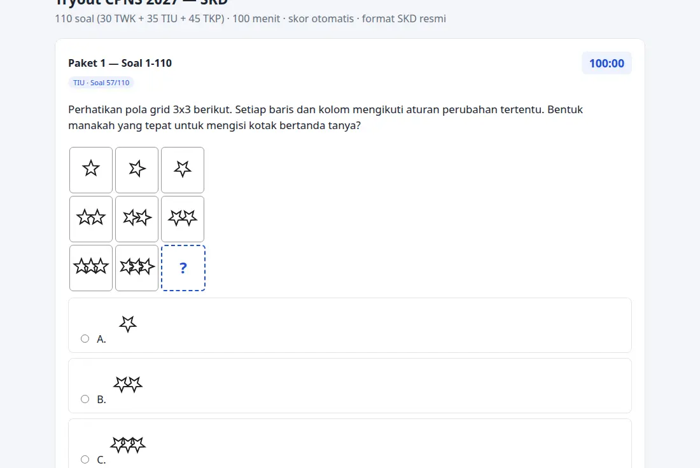
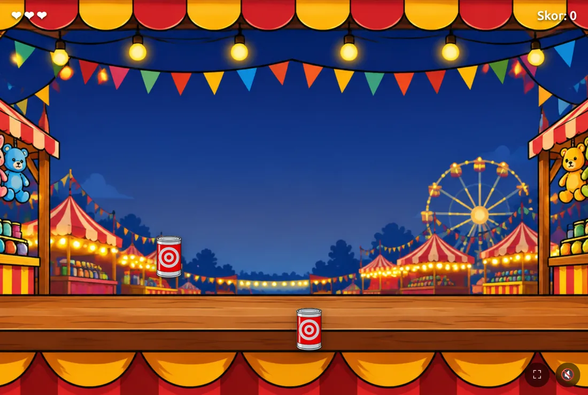
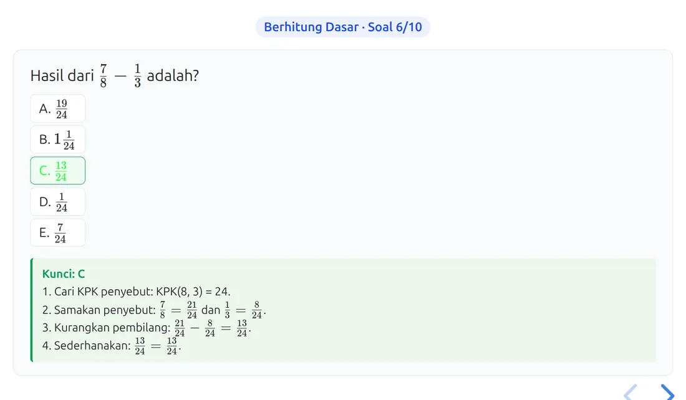
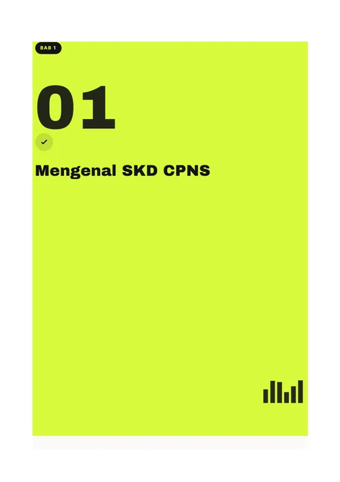

KerjakanSoal dengan waktu dan skor
Tryout 110 soal format SKD resmi, timer 100 menit, nilai langsung keluar, pembahasan tiap nomor.
Toko produk digital
untuk guru dan pejuang CPNS.
Sekali bayar, langsung dipakai.
Setiap produk dibuat untuk dipakai: soal yang dikerjakan dengan waktu, game yang dimainkan, dan alat yang langsung jalan di browser. Semuanya buatan sendiri, dicek satu per satu.
Tryout 110 soal format SKD resmi, timer 100 menit, nilai langsung keluar, pembahasan tiap nomor.
Game tembak kaleng, kuis milyarder, dan ruang nalar: soal asli muncul di tengah permainan.
Peta Capaian Kelas membaca nilai siswa dan menunjukkan siapa yang perlu dibantu, per kelas.







110 soal, 100 menit, nilai TWK, TIU, dan TKP langsung keluar.
Lima paket format SKD resmi, kunci dicek ulang, bisa dicetak.
Kena kaleng, soal muncul. Jawab benar, skor naik.
Video per tipe soal: trik, contoh, dan cara menghitungnya.
Lima belas tingkat, tiga bantuan, satu akun.
Ebook rencana belajar 30 hari dan jebakan yang sering bikin gagal.
Dibayar lewat Mayar. Nama pengguna dan kata sandi dikirim ke emailmu, lalu isinya terbuka di area member. Produk berikutnya otomatis masuk ke akun yang sama.
Dikirim langsung dari gudang mitra ke alamatmu. Ongkir dihitung saat checkout, nomor resi dikirim lewat Mayar.
Tautan afiliasi: kalau kamu membeli lewat tautan ini, mzakom digital mendapat komisi dari platformnya. Harga untukmu tetap sama.
Alat dan bahan ajar yang dipakai sendiri di kelas, lalu dirapikan supaya bisa dipakai guru lain.
Buka Peta Capaian Kelas ↗Jika layar HP menampilkan pesan “Tidak dapat membuka file”, penyebabnya ada beberapa akun Google yang aktif di HP. Tekan dan tahan tombol di atas, lalu pilih “Buka di tab baru”, atau gunakan mode Incognito.
Daftar sebagai afiliator, dapat tautan khusus, dan terima komisi dari setiap pembelian lewat tautanmu. Pencatatan dan pembayaran komisi diurus Mayar.
Cara jadi afiliatorSetelah pembayaran di Mayar terkonfirmasi, nama pengguna dan kata sandi dikirim ke email yang kamu isi saat checkout, biasanya dalam beberapa menit. Masuk di halaman Masuk, ganti kata sandinya, lalu buka isinya di area member. Cek folder spam bila email belum terlihat.
Tidak. Selama email checkout-nya sama, produk baru ditambahkan ke akun yang sudah ada.
Langsung di situs ini, lewat browser di HP atau laptop. Tidak perlu memasang aplikasi.
Barang dari toko lain (Shopee, TikTok Shop, dan sebagainya) yang kami rekomendasikan. Tautannya tautan afiliasi: pembelian lewat tautan itu memberi kami komisi dari platformnya, tanpa menambah harga untukmu. Pembayaran, pengiriman, dan retur diurus toko tersebut.
Kerjakan 10 soal SKD gratis sekarang, tanpa daftar. Lihat sendiri seperti apa soal dan pembahasannya.
Coba 10 soal gratis